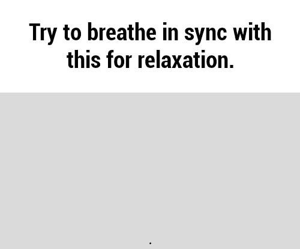

Coping & Soothing

Distractions from Self-Destructive Behaviors
- use an ice cube in one hand and squeeze
- gently snap rubber band on wrist
- gently dig fingernails in arm without breaking skin
- write letters to the people you hate or have hurt you (what they did and why u hate them) then throw away or save
- scream into a pillow, in the car
- cry
- exercise
- take a walk outside
- word vomit in a journal for 5 minutes
- voice memo your stream of consciousness - say whatever is on your mind